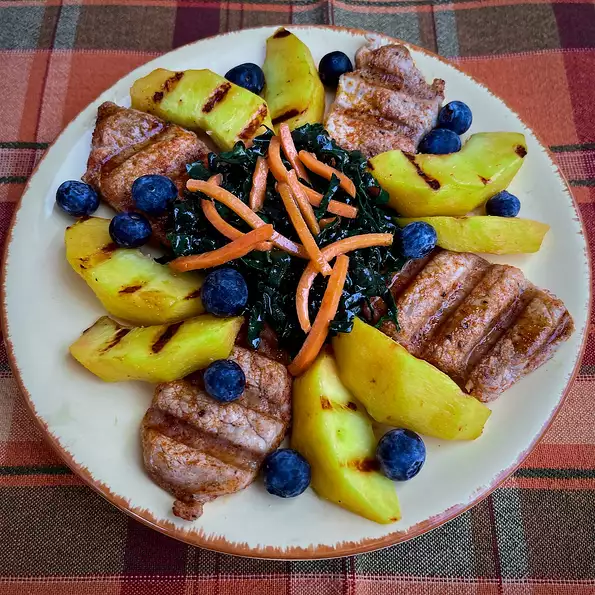

Grilled pork and peach salad

Description
Summer is perfect for salads and grilling. Summer is also perfect for peaches,
and this salad combines all three!
Serve as a light entree with a crusty bread.
Ingredients
- 3/4 cup extra-virgin olive oil
- 1/4 cup good-quality balsamic vinegar
- 1 tablespoon Dijon mustard
- 2 teaspoons minced fresh ginger root
- 1/2 teaspoon minced garlic
- 1/4 teaspoon cayenne pepper, or to taste
- 1/2 teaspoon salt, divided, or to taste
- 1/4 teaspoon ground white pepper, or to taste
- 1 tablespoon vegetable oil, or more as needed
- 1/2 teaspoon smoked paprika
- 1/2 teaspoon granulated garlic
- 1/4 teaspoon ground black pepper
- 1 pound pork tenderloin, cut crosswise into 1/2-inch thick slices
- 3 medium (blank)s fresh peaches - pitted, skinned, and sliced
- 1 bunch kale, stems removed and discarded
- 1 cup matchstick-cut carrots
- 1 cup fresh blueberries
Steps
- Combine olive oil, balsamic vinegar, Dijon mustard, minced ginger, minced garlic, cayenne, 1/4 teaspoon
salt,
and white pepper in a pint-sized jar with a lid. Place the lid on the jar and shake the ingredients until
well blended. Taste and adjust seasoning, if desired. Place container in the refrigerator until ready to
use.
- Clean grates of an outdoor grill and preheat to medium-high, about 10 minutes, or as the manufacturer
recommends.
- When grill is ready, grease grates using tongs to hold a paper towel saturated with vegetable oil.
- While the grill is heating, combine smoked paprika, granulated garlic, 1/4 teaspoon salt, and black pepper
in
a small bowl.
- Sprinkle both sides of pork slices with dry spice mixture and allow to stand at room temperature until the
grill is ready.
- Place seasoned pork slices on the grill and do not touch for about 2 minutes. Using tongs, flip the slices
and continue to grill until grill marks form and the pork reaches an internal temperature of 145 degrees F
(62 degrees C), an additional 2 to 3 minutes. Remove from the grill and set aside.
- Place peach slices across the grate and grill until grill marks form, 2 to 3 minutes per side. Add to the
reserved grilled pork slices.
- Make a bundle of kale leaves and slice across into 1/8-inch slices. Place sliced kale and carrots in a large
mixing bowl. Add grilled pork slices and grilled peaches, and toss with desired amount of dressing (see
note).
- Arrange salad on plates, and sprinkle 1/4 cup blueberries on each plate.
Return to the home page